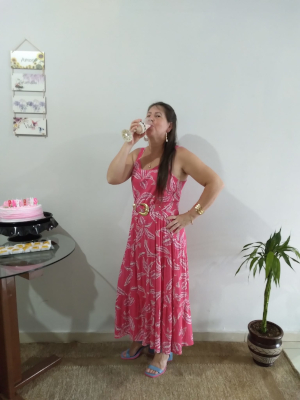
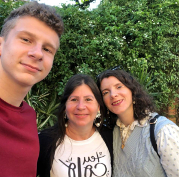

Ser mãe
O que é Ser mãe?
Mãe é aquela que está sempre disposta a proteger seus filhos, que está presente nos momentos mais importantes da sua vida, é aquela pessoa que faz o impossível virar possível e que acima de tudo, deseja o nosso bem. Ser mãe é entender, perdoar, esquecer, sofrer, renascer, chorar e sorrir, mas acima de tudo, ser mãe é aprender um novo significado para amar
Existem mães e mãe
Existem mães que só são mães por sangue, já as mãe ou manhê, são as verdadeiras mãe, as que importam e tiram de onde não tem, para cuidar dos seus filhos
Essa ai é a minha mãe, Eliete de Oliveira, nasceu em 01/02/1975 e é a mulher mais guerreira e forte que conheci, que dá os melhores conselhos e me leva a me tornar um homem cada dia melhor.
Mãe, obrigado por me fazer mais forte que minha zona de conforto, obrigado por me limpar do cimento, obrigado por me levar ao médico por causa de um ventilador, a sua força e coragem me inspiram a ser uma pessoa melhor a cada dia. Obrigado por ser meu exemplo é a minha melhor amiga e conselheira. Obrigado por estar sempre ao meu lado. Mãe, seu sorriso é a minha maior felicidade. Obrigado por sempre me fazer sorrir também. Mãe é o amigo mais verdadeiro que temos quando a dificuldade dura e repentinamente cai sobre nós; quando a adversidade toma o lugar da prosperidade; quando os amigos que se alegram conosco nos bons momentos nos abandonam; quando os problemas complicam-se ao nosso redor, ela ainda estará junto de nós, e se esforçará através de seus doces preceitos e conselhos para dissipar as nuvens de escuridão e fazer com que a paz volte aos nossos corações.